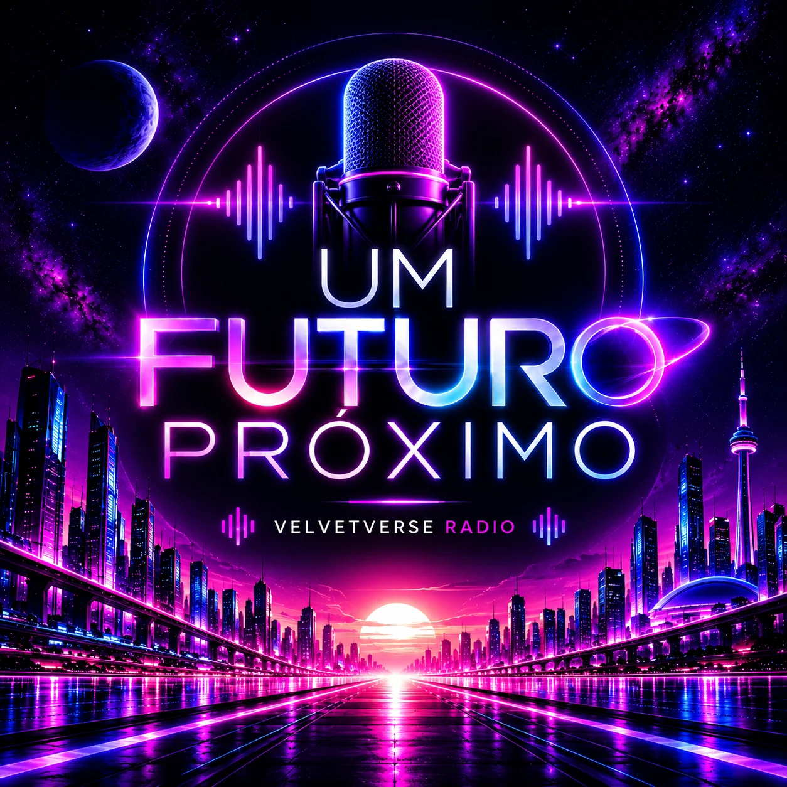
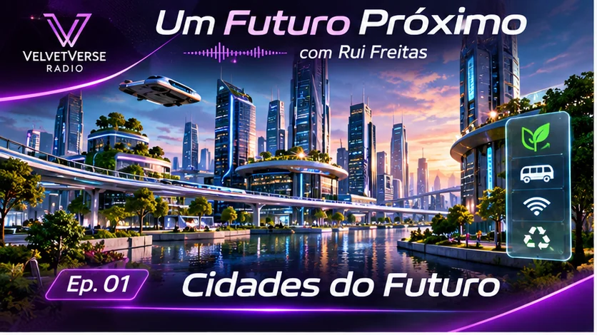

Um Futuro Próximo
Uma viagem pelas mudanças que podem estar mais perto do que imaginamos. Tecnologia, cidades, trabalho, hábitos e novas formas de viver, explicados de forma simples com base em tendências reais e cenários possíveis. Uma rubrica apresentada por Rui Freitas.
📻 Domingos alternados • 10:00 — hora de Toronto
🎙️ Exclusivo VelvetVerse Radio
🎙️ Exclusivo VelvetVerse Radio

Rui Freitas
Apresentador • Um Futuro Próximo

EPISÓDIO 01
Cidades do Futuro
Como poderão ser as cidades de amanhã? Mobilidade inteligente, energia limpa e novas formas de viver em comunidade.
O áudio fica disponível depois da emissão.
▶ Ouvir episódio completo
Arquivo Um Futuro Próximo
Escolhe um episódio. Os áudios ficam disponíveis após a respetiva emissão na rádio.